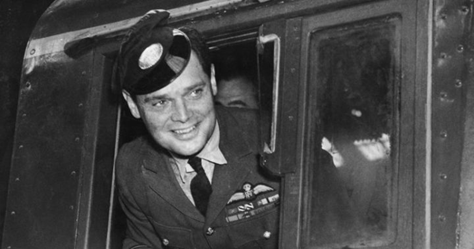

قضوة: دوغلاس بدر
دوغلاس بدر:
دوغلاس بدر هو طيار بريطاني في سلاح الجو الملكي اشتهر بشجاعته وإصراره.
قصة بدر من القصص المميزة في عالم الطيران، ليس فقط لمهاراته المذهلة في مجال الطيران، ولكن أيضا لشجاعته وصموده في مواجهة الشدائد. لم يفقد تصميمه أبدا على الرغم من خسارته ساقيه قبل انضمامه إلى سلاح الجو الملكي البريطاني. بعد تعافيه، خضع للتدريب على الطيران مرة أخرى، واجتاز رحلات الفحص، ثم سعى إلى إعادة تنشيطه كطيار.